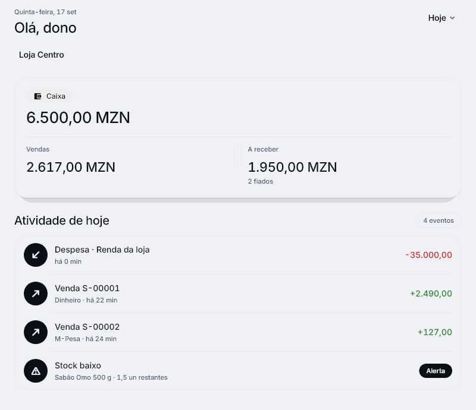
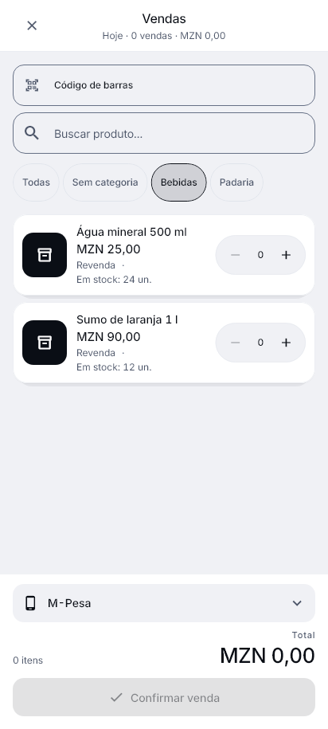

Android
No telemóvel ou tablet.
DescarregarGestão para pequenos e médios negócios
Vendas, stock e finanças desenhados para trabalhar em conjunto. Uma visão clara para gerir o dia a dia.

Uma operação mais clara
Para mercearias, lojas, pastelarias, armazéns e negócios familiares. Acompanhe o que vende, o que tem e o dinheiro que movimenta.
01 / Vendas
Registe vendas no ponto de venda, encontre produtos com facilidade e acompanhe cada operação do balcão.
Conhecer a aplicação
02 / Stock
Organize produtos, registe entradas e saídas e acompanhe quantidades disponíveis. A reposição começa com informação clara.
Ver o Tareqo em funcionamento03 / Finanças
Acompanhe carteiras, entradas, saídas e valores a receber. Perceba como o dinheiro se movimenta no seu negócio.
Solicitar uma demonstraçãoVisual ilustrativo. Sem resultados ou métricas de clientes.
Onde trabalha
Aceda ao Tareqo na plataforma que faz sentido para a sua operação.
No telemóvel ou tablet.
DescarregarAbra no navegador.
Abrir Tareqo Web (abre numa nova janela)No computador da loja.
DescarregarConheça antes de começar
Converse com a equipa. Esclareça dúvidas sobre funcionalidades, preços e condições directamente pelo WhatsApp.
Solicitar demonstração pelo WhatsApp (abre numa nova janela)Tareqo
Tenha vendas, stock e finanças no mesmo lugar.